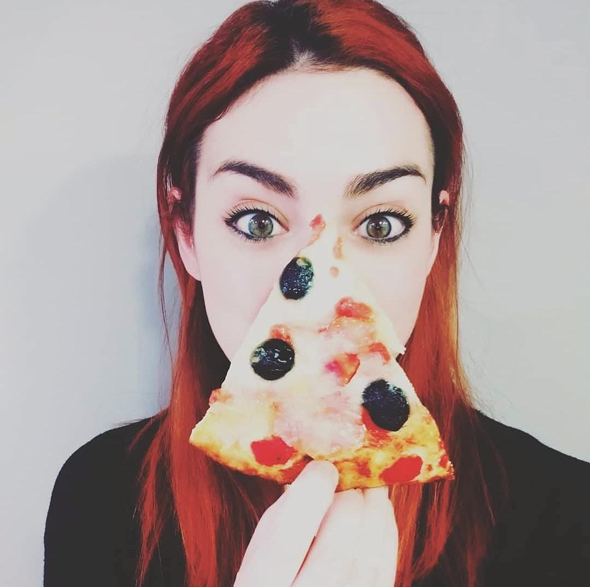

Affrettati!
La prima finestra di partecipazione si chiuderà tra
Cos'è TotoSanremo2021
TotoSanremo 2021 è un gioco a scommesse privato e a scopo goliardico avente come argomento i risultati
del Festival di Sanremo 2021.
TotoSanremo 2021 non è in alcun modo collegato al Festival di Sanremo, alla Rai, o a qualsiasi altro Ente o Artista o Casa Discografica partecipante al Festival di Sanremo.
Attraverso una serie di scommesse di natura privata e a titolo esclusivamente non oneroso,
saranno attribuiti dei punteggi in base al risultato conseguito.
Tutti i partecipanti partono da un punteggio di 0 (zero) punti.
Vince TotoSanremo2021 chi, alla fine della Quinta Serata, avrà totalizzato il punteggio maggiore
o chi, anche nel corso delle serate precedenti, avrà raggiunto il punteggio di 1.000.000 (un milione).
Il vincitore del TotoSanremo2021 sarà premiato con la facoltà di redigere il regolamento di TotoSanremo2022.
Ammissione
Per essere ammessi al gioco, i partecipanti dovranno inviare entro le ore 22.00 di sabato 6 marzo 2021 un'epistola elettronica (e-mail) con al suo interno:
OGGETTO: NOME COGNOME - TotoSanremo2021
CORPO: opzionale
ALLEGATO: un file compresso in formato .zip protetto da password segreta contenente un file di testo o un'immagine con all'interno una o più delle seguenti informazioni:
Primo Classificato
Secondo Classificato
Terzo Classificato
Vincitore Nuove Proposte
Vincitore Premio della Critica
Vincitore Premio al miglior testo
Vincitore Premio alla migliore composizione musicale
Punteggi
I punteggi verranno stabiliti in base al verificarsi dell'eventualità pronosticata ed attribuiti in modo automatico all'autore del pronostico.
Inoltre, al fine di disincentivare pronostici a ridosso della finale, è previsto un sistema a punti che assegni punteggi diversi in base alla data di avvenuto pronostico,
attraverso un tabella che seguirà il seguente schema:
Pronostico ricevuto entro le ore 19.00 di martedì 2 marzo 2021 - 70.000 punti bonus
Pronostico ricevuto entro le ore 19.00 di mercoledì 3 marzo 2021 - 50.000 punti bonus
Pronostico ricevuto entro le ore 19.00 di giovedì 4 marzo 2021 - 30.000 punti bonus
Pronostico ricevuto entro le ore 19.00 di venerdì 5 marzo 2021 - 5.000 punti bonus
Pronostico ricevuto entro le ore 19.00 di sabato 6 marzo 2021 - 500 punti bonus
Pronostico ricevuto tra le ore 19.00 e le ore 22.00 di sabato 6 marzo 2021 - MALUS di 3.000 punti
I punteggi riguardanti i vincitori di Sanremo 2021 seguiranno invece il seguente schema:
Primo Classificato - 500.000 punti
Secondo Classificato - 600.000 punti
Terzo Classificato - 200.000 punti
Vincitore Nuove Proposte - 50.000 punti
Vincitore Premio della Critica - 150.000 punti
Vincitore Premio al miglior testo - 322.541 punti
Vincitore Premio alla migliore composizione musicale - 200.000 punti
Partecipanti
Deborah Punteggio: 0
Elena Punteggio: 0
Enrica Punteggio: 0
Enrico Punteggio: 0
Lara U. Punteggio: 0
Lara P. Punteggio: 0
Masoud Punteggio: 0
Mattia Punteggio: 0
Salvatore Punteggio: 0
Valentina Punteggio: 0